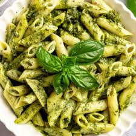
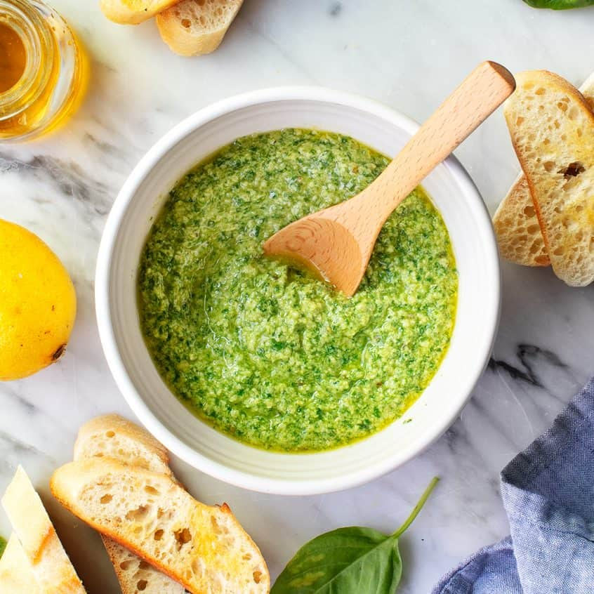

Pesto Pasta (wow amazing 2025 no clickbait real 100% mr beast)

Pesto pasta is simple to make and full of flavor. This recipe is perfect for busy weeknights and comes together
in just 15 minutes. Use any pasta, and add as much pesto sauce as you like. Enjoy topped with plenty of Parmesan
cheese.
Ingredients
- 1 (16 ounce) package pasta
- 2 tablespoons olive oil
- ½ cup chopped onion
- 2 ½ tablespoons pesto or more to taste
- salt to taste
- freshly ground black pepper to taste
- 2 tablespoons grated Parmesan cheese
How To Prepare
- Gather all ingredients.
- Fill a large pot with lightly salted water and bring to a rolling boil. Stir in pasta and return to a boil.
Cook pasta uncovered, stirring occasionally, until tender yet firm to the bite, about 8 to 10 minutes. Drain
and transfer into a large bowl.
- Meanwhile, heat oil in a frying pan over medium-low heat. Add onion; cook and stir until softened, about 3
minutes.
- Stir in pesto, salt, and pepper until warmed through.
- Add pesto mixture to hot pasta; stir in grated cheese and toss well to coat and enjoy.
How To Make Pesto (For those who want to make pesto sauce themselves)

Ingredients
- ½ cup toasted pine nuts
- 2 tablespoons fresh lemon juice
- 1 small garlic clove
- ¼ teaspoon sea salt
- freshly ground black pepper
- 2 cups basil leaves
- ¼ cup extra-virgin olive oil, plus more for a smoother pesto
- ¼ cup freshly grated Parmesan cheese, optional
How To Prepare
- In a food processor, combine the pine nuts, lemon juice, garlic, salt, and pepper and pulse until well
chopped.
- Add the basil and pulse until combined.
- With the food processor running, drizzle in the olive oil and pulse until combined. Add the Parmesan cheese,
if using, and pulse to briefly combine. For a smoother pesto, add more olive oil.